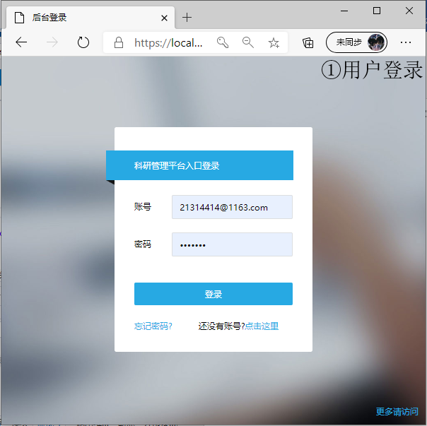
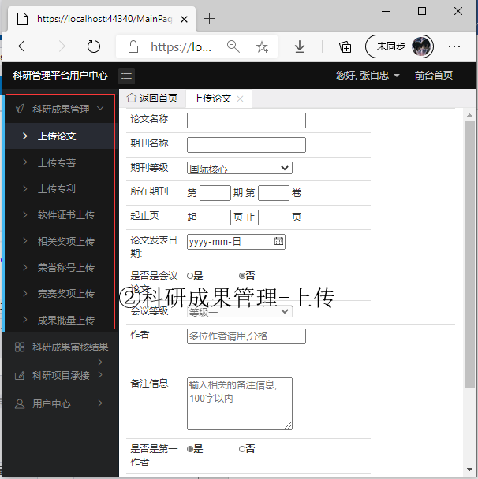
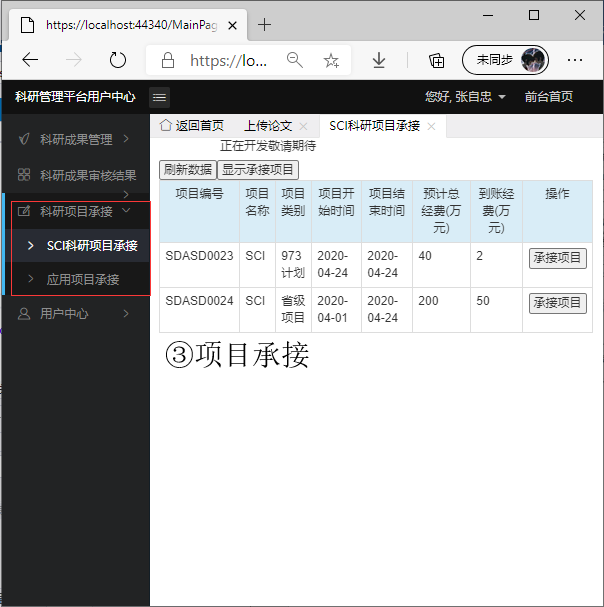

科研管理平台（陈志涛等人）：39.97.165.52/index.aspx
系统主要板块：科研成果管理， 科研项目承接， 科研能力量化评估
科研成果管理:科研人员提交相关相关科研成果与相关联的审核材料，交由科研秘书进行审核评估。
科研项目承接:科研秘书转发并发布相关科研项目，由科研人员进行选择承接某项目并成为其科研成果。
科研能力量化评估:针对科研人员上传的成果数量以及科研成果质量给出量化分析结果。
使用说明：


